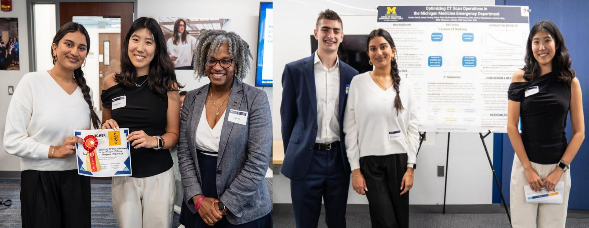

University of Michigan, Ann Arbor

Our team, the Reducing Emergency Department Crowding (REDC) group, earned 2nd place at the 2025 IOE Undergraduate Research Symposium for the poster “Optimizing CT Scan Operations in the Michigan Medicine Emergency Department.” The team consisted of Sandra Hawil, Grace Phan, Nethra Vijayakumar, Laney Hoving, Aimeng Yang, and myself, working under the guidance of Professor Amy Cohn and Vincenzo Loffredo. We developed a Python-based discrete-event simulation framework integrating queueing models, stochastic scenarios, and scanner utilization visualizations to replicate real-world CT workflows. Through over 100 simulation runs, we identified opportunities to free approximately 24 hours of daily bed capacity, providing actionable recommendations to hospital leadership. Building on this recognition, the project is now being expanded to examine additional bottlenecks in the Emergency Department.
Read more
Bharat Electronics Limited, Bangalore


I took on the role of project lead for the production of Voter Verifiable Paper Audit Trail (VVPAT) devices, a sub-project of the Electronic Voting Machine (EVM) program for India’s 2024 Parliamentary Elections. The target was to produce 124,000 VVPATs, and I was responsible for procurement, vendor coordination, and production planning while ensuring compliance with Election Commission standards. Working closely with the Development and Engineering team, I made sure construction and assembly followed specifications. I also managed E-Way Bills for material transport and maintained accurate records in SAP. With the combined efforts of our team, we successfully met the production goals on time, contributing to the smooth execution of the national elections.
Election Commission of India – Punjab Legislative Assembly Election Duty

In the 2022 Punjab Legislative Assembly election, I participated in election duty in Bassi Pathana, Punjab, India. I facilitated the commissioning and setup of Electronic Voting Machines (EVMs), conducted mock polls, and coordinated with a team of officials to manage the voting process. It was a demanding responsibility, and I received an excellent rating from my Election Incharge for the way I carried out my duties during the election.
Amrita Vishwa Vidyapeetham, Coimbatore

I graduated with distinction in 2021, earning a CGPA of 9.38/10 and securing 8th rank out of 250 students in my Mechanical Engineering batch. This achievement reflected steady effort and consistency across the program, helping me build a strong foundation in both core subjects and applied projects.
Coursework: Operations Research, Numerical Methods, Probability and Statistics, Calculus and Matrix Algebra, Computer
Programming, Computational Thinking and Problem Solving
{kind=link}